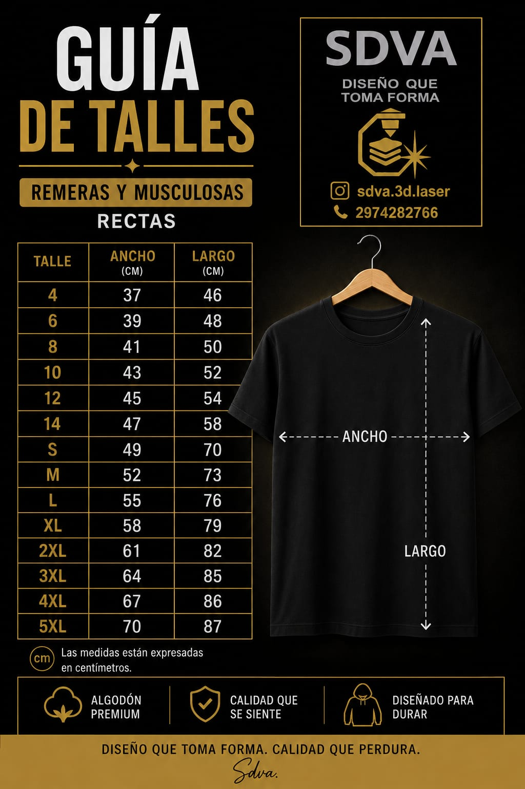
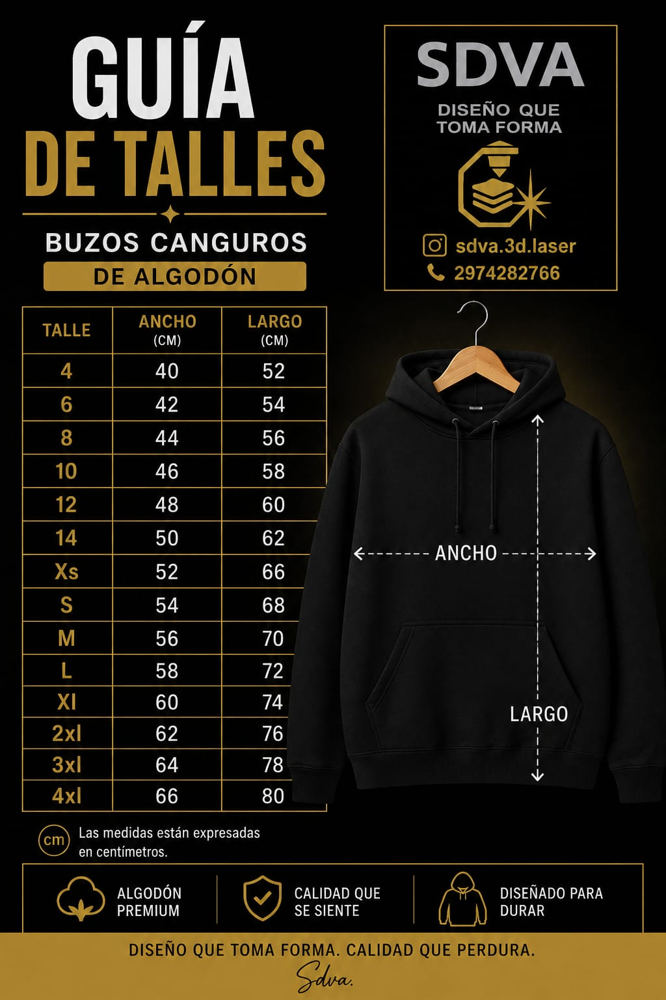

Remeras

Compará ancho y largo en centímetros antes de elegir tu remera o buzo.


Las medidas están expresadas en centímetros y fueron proporcionadas por el fabricante. Las gorras trucker son de talle único ajustable.